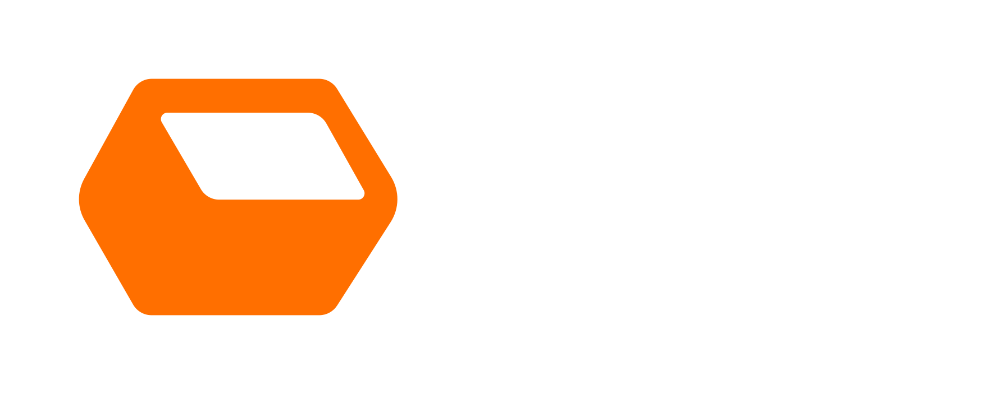

Complete environments
Capture interiors, exteriors, circulation, and context in one coherent digital record.

Spatial capture for the real world
We create precise, navigable 3D records of venues, properties, exhibits, and environments so your team can inspect, plan, preserve, and share from anywhere.
Your place, captured
More than a virtual tour
Every capture is shaped around what your team needs to understand, communicate, or build next.
Capture interiors, exteriors, circulation, and context in one coherent digital record.
Turn field conditions into measured geometry for planning, documentation, and coordination.
Let stakeholders revisit a place remotely without scheduling another trip to site.
Answer dimensional questions from the captured space and reduce repeat site visits.
Receive point clouds, meshes, floor plans, media, or platform-ready outputs.
Share one reliable view of the space with owners, designers, operators, and partners.
Built around your environment
A useful scan starts with the decisions it needs to support. We tailor coverage, resolution, and delivery to the place and the people using it.
Venues + events
Document access, sightlines, infrastructure, staging, and guest flow for faster coordination.
Real estate + facilities
Support listings, renovations, operations, and remote due diligence with a lasting spatial record.
Museums + heritage
Create accessible records of exhibitions, collections, and culturally significant environments.
A reliable source of truth
A scan freezes real-world conditions at a useful moment in time. Teams can return to it whenever questions emerge, compare changes, and move work forward with shared spatial context.
Clear from brief to delivery
We learn about the environment, access, accuracy, and deliverables your project requires.
Our team documents the agreed areas efficiently while working around your operations.
We align, clean, and quality-check the data so the result is coherent and dependable.
Your team receives practical outputs, organized for the platforms and workflows that follow.
Common questions
Every environment is different. These are the basics; we will scope the specifics with you.
Discuss your siteCommercial interiors, venues, residential and industrial properties, museums, exhibitions, construction sites, and other accessible environments.
Accuracy depends on the capture method and project need. We establish the required tolerance during scoping and choose the appropriate equipment and workflow.
Deliverables may include hosted walkthroughs, point clouds, meshes, plans, imagery, and common exchange formats. We align delivery with your downstream tools.
Often, yes. We plan routes and timing around access, privacy, safety, and operational constraints to minimize disruption.
The value is not just seeing a space. It is having the space available when the next question comes up.
Have a place in mind?
Tell us what you need to capture, where it is, and what you want to do with the result. We will help shape the right approach.
Tell us about your project